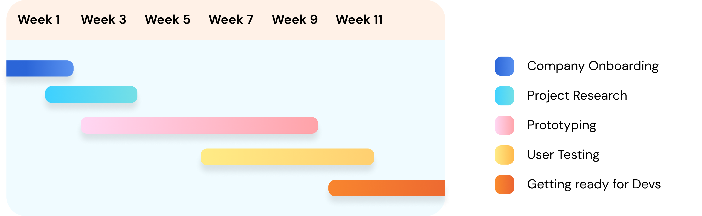

Overview
Designing an accessible and comprehensive dashboard system for 7000+ users.
UiPath offers a wide range of products and services, automation data visualization,
tenant health data, and more. How can we redesign a complete dashboard with
comprehensive information while retaining users and maintaining simplicity?
Timeline
Starting with virtual onboarding, I went through initial project research and learned how to use the various products UiPath offers, then began prototyping, user testing, and working with developers.
Initial Research
Initiating the dashboard redesign project involved data gathering on user retention and page visitor demographics. This analysis swiftly revealed a significant influx of visitors, encompassing both business users and developers, to the UiPath main page. However, only a small fraction of these users were effectively retained within the Cloud ecosystem for the long term.
After several interviews with UiPath customers and conducting initial
research regarding the original homepage, I found that the most important
and relevant items to include were:
1) tenant health and
2) information about products & services.
These features, along with general usability and page friendliness,
were what I focused on throughout my summer.
Prototyping
Cards for tenants and products & services and implementing color
Color, hover states, banner, empty and filled states
Final Prototype
Takeaways:
1) Including a banner is important
2) Tenants should provide a brief overview and lead users to errors
3) Being specific about snap points is essential for developers
Research + Surveying
Learning from the expertise of the team's UX Researcher and receiving guidance from my mentor, I conducted research with business users and developers. Setting up user testing was an insightful experience where I learned how to drill down on necessary information to improve the homepage experience.
Final Thoughts
At the end of the day, users want a comprehensive yet uncomplicated dashboard to visualize pertinent information. As an intern and someone with a fresh set of eyes, I needed to understand UiPath's product ecosystem and discern what was important from a new user's perspective. I loved the UiPath culture (even though I had a virtual internship experience), gained the best mentorship, and learned how to conduct effective user testing. It was a great summer!